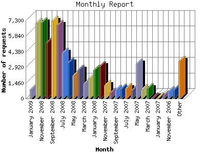

Analog 5.1
Analog 5.1 Report Magic 2.21
Report Magic 2.21The Monthly Report identifies activity for each month in the report
time frame. Remember that each page hit can result in several server requests
as the images for each page are loaded.
Note: Depending on the
report time frame, the first and last months may not represent a complete
month's worth of data, resulting in lower hits.

| Month | Number of requests | Number of page requests | |
|---|---|---|---|
| 1. | July 2006 | 1,367 | 57 |
| 2. | August 2006 | 192 | 0 |
| 3. | September 2006 | 1,932 | 0 |
| 4. | October 2006 | 806 | 0 |
| 5. | November 2006 | 675 | 0 |
| 6. | December 2006 | 269 | 0 |
| 7. | January 2007 | 90 | 0 |
| 8. | February 2007 | 79 | 0 |
| 9. | March 2007 | 978 | 0 |
| 10. | April 2007 | 871 | 0 |
| 11. | May 2007 | 3,258 | 0 |
| 12. | June 2007 | 770 | 0 |
| 13. | July 2007 | 956 | 0 |
| 14. | August 2007 | 898 | 0 |
| 15. | September 2007 | 813 | 0 |
| 16. | October 2007 | 533 | 0 |
| 17. | November 2007 | 1,237 | 0 |
| 18. | December 2007 | 3,035 | 0 |
| 19. | January 2008 | 2,698 | 0 |
| 20. | February 2008 | 1,897 | 0 |
| 21. | March 2008 | 1,369 | 0 |
| 22. | April 2008 | 2,702 | 0 |
| 23. | May 2008 | 2,143 | 0 |
| 24. | June 2008 | 3,383 | 0 |
| 25. | July 2008 | 4,290 | 0 |
| 26. | August 2008 | 6,853 | 2 |
| 27. | September 2008 | 7,238 | 0 |
| 28. | October 2008 | 5,254 | 0 |
| 29. | November 2008 | 7,096 | 174 |
| 30. | December 2008 | 7,042 | 310 |
| 31. | January 2009 | 856 | 70 |
Most active month December 2008 : 310 pages sent. 7,238 requests handled.
Monthly average: 19 pages sent. 2,309 requests handled.
This report was generated on January 6, 2009 12:15.
Report time frame July 11, 2006 22:57 to January 5, 2009 23:20.
| Web statistics report produced by: | |
| Analog 5.1 | Report Magic 2.21 |